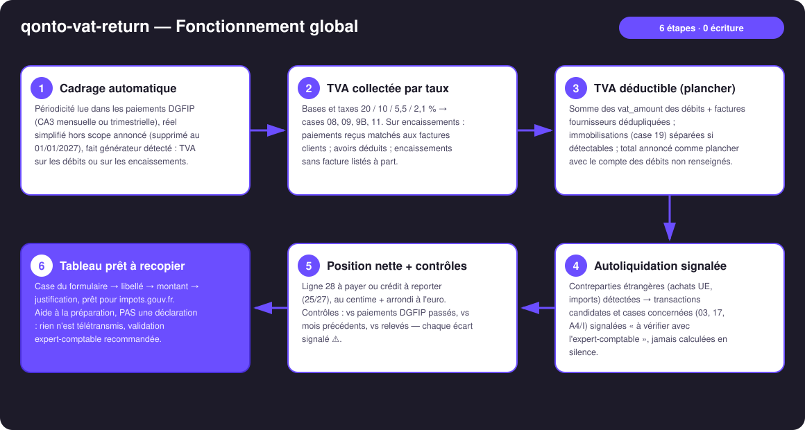
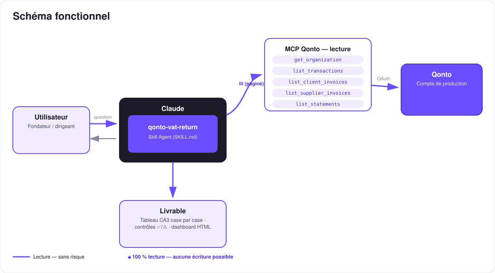

Ta CA3 case par case, prête à recopier — préparée depuis les données Qonto réelles.
Chaque mois, la même corvée : reconstituer la TVA collectée et la TVA déductible, puis reporter les bons montants dans les bonnes cases sur impots.gouv.fr. Le skill fait le travail de préparation depuis le compte Qonto — aide à la préparation, PAS une déclaration :
Bases et taxes 20 / 10 / 5,5 / 2,1 % → cases 08, 09, 9B, 11 — sur les débits ou sur les encaissements selon le fait générateur détecté.
Somme des vat_amount + factures fournisseurs, immobilisations (case 19) séparées si détectables — plancher annoncé avec le compte des débits non renseignés.
Ligne 28 à payer ou crédit à reporter (25/27) — calcul au centime + arrondi à l'euro du formulaire.
Vs mois précédents, vs paiements DGFIP passés, vs relevés — chaque écart signalé ⚠️ avant de recopier.
| Prérequis | Détail | Obligatoire |
|---|---|---|
| Compte Qonto production | Le skill s'adapte à toute organisation — get_organization d'abord, zéro donnée en dur | ✅ |
| Pays | La CA3 est un formulaire français. Autres pays Qonto (DE, ES, IT…) : synthèse TVA générique, jamais de mapping vers des cases françaises | ℹ️ détecté |
| MCP Qonto connecté | Connecteur officiel (claude.ai / Claude Desktop), login OAuth | ✅ |
| Régime réel (CA3) | Le simplifié (CA12 + acomptes) est hors scope — détecté, annoncé, avec le rappel de sa suppression au 01/01/2027 (art. 38 LF 2025) | ℹ️ détecté |
| Factures dans Qonto | Plus les factures clients/fournisseurs vivent dans Qonto, plus le tableau est précis ; sinon travail depuis les transactions, limites annoncées | ⭕ recommandé |
| Historique ≥ 6 mois | Nourrit la détection de périodicité et les contrôles ; en dessous, dégradation honnête | ⭕ |

vat_payment_condition: "on_receipts" sur les factures clients → la collecte suit les paiements reçus du mois, matchés aux factures (montant + contrepartie + référence) — le point que la plupart des outils ratent ; portefeuille mixte géré facture par factureemitted_at vs settled_at) · pagination ≤ 50 partout · société non française ou compte vide : le skill dit ce qu'il peut et ne peut pas préparer
Lecture seule intégrale : aucun outil d'écriture, aucune télétransmission. Le skill prépare, contrôle et justifie — il ne peut ni déclarer, ni payer, ni modifier. La seule action qui suit est celle de l'utilisateur : recopier les cases sur impots.gouv.fr, idéalement après validation par l'expert-comptable.
| Case / ligne | Libellé officiel | Comment le skill la remplit |
|---|---|---|
| 01 | Ventes, prestations de services (base HT) | Somme des bases taxées de la période (débits ou encaissements selon le fait générateur) |
| 08 · 09 · 9B · 11 | Base et taxe par taux 20 / 5,5 / 10 / 2,1 % | Ventilation TVA des factures (émises ou matchées aux paiements reçus), avoirs déduits |
| 16 | Total TVA brute due | Somme des taxes par taux |
| 03 · 17 · A4/I | Acquisitions intracom · imports (autoliquidation) | Jamais calculées — transactions candidates signalées « à vérifier avec l'expert-comptable » |
| 19 | TVA déductible — immobilisations | Seulement si détectable (label, description fournisseur, achat d'équipement) ; sinon expliqué |
| 20 | TVA déductible — autres biens et services | vat_amount des débits + factures fournisseurs, dédupliqués — plancher annoncé |
| 22 | Report de crédit antérieur | Depuis la CA3 précédente (fournie ou inférée 🟡, à confirmer) |
| 23 | Total TVA déductible | 19 + 20 + 21 + 22 |
| 25 · 27 (· 26) | Crédit de TVA · crédit à reporter (· remboursement) | Si déductible > collectée ; le remboursement reste un choix utilisateur/comptable |
| 28 · 32 | TVA nette due · total à payer | Si collectée > déductible — au centime + arrondi à l'euro du formulaire |
| Contrôle | Comparé à | Sortie |
|---|---|---|
| TVA nette du mois | Médiane des paiements DGFIP passés | ⚠️ si écart > 30 % — expliqué (saisonnalité ? grosse facture ? données manquantes ?) |
| Bases et mix de taux | Mois / trimestres précédents | ⚠️ sur changement de mix ou saut de base |
| Transactions analysées | Totaux des relevés (list_statements) | ⚠️ si la période n'est pas couverte en entier |
| Encaissements (on_receipts) | Factures clients | Encaissements non matchés listés avec montants |
| Débits non renseignés | — | Compte + total → mention « plancher » sur la déductible |
| Sortie | Format | Quand |
|---|---|---|
| Réponse dans la conversation | Tableau CA3 case par case (case → libellé → montant → justification) + tableau des contrôles ✅/⚠️ | Toujours — c'est la base |
| Dashboard interactif | Fichier/artifact HTML : vue « formulaire », ventilation par taux, historique vs paiements DGFIP | Si l'hôte affiche les fichiers (artifacts claude.ai, Claude Desktop, Claude Code) ; repli automatique sur les tableaux sinon |
| Rien d'autre | Aucune télétransmission, aucune écriture Qonto | Jamais — c'est le design |
La démo ≤ 3 min jointe à la PR suit le storyboard : la corvée mensuelle → détection du régime (encaissements !) → le tableau case par case → la TVA nette qui tombe au centime sur le calcul manuel du comptable → contrôles de cohérence + dashboard. Tournée en live sur un compte de production réel.
| Idée | Effort | Note |
|---|---|---|
Pré-contrôle des pièces : list_transaction_attachments sur les débits déduits, justificatifs manquants signalés | Faible | Renforce le dossier en cas de contrôle |
Chaînage avec qonto-tax-pilot (skill #1) : la CA3 préparée alimente la provision du coffre fiscal | Faible | Même détection du fait générateur, partagée |
| Brouillon d'email à l'expert-comptable (MCP mail détecté dynamiquement) | Faible | Multi-MCP optionnel — le cœur reste 100 % Qonto |
| Modules TVA par pays (DE USt-VA, ES modelo 303, IT LIPE…) | Moyen | Qonto est paneuropéen ; même moteur, autre mapping de cases |